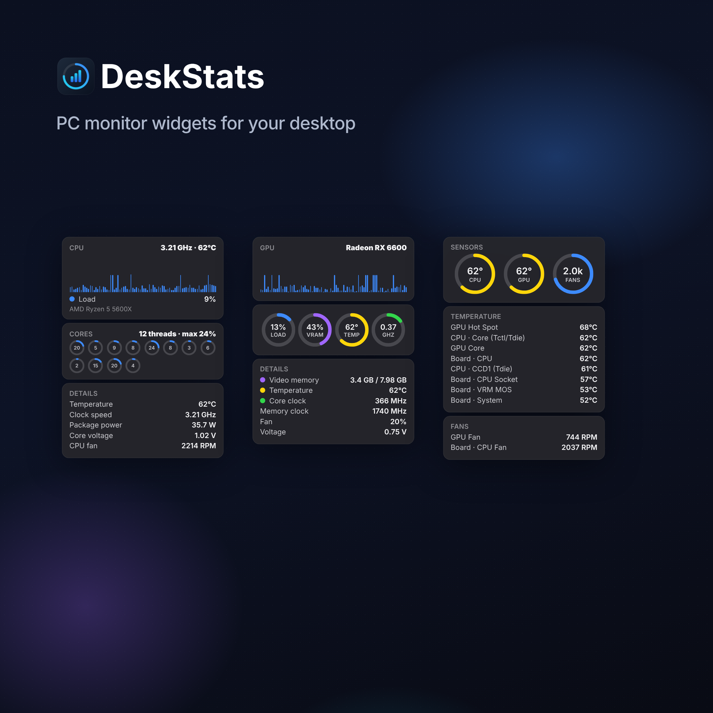

01
CPU, down to every thread
CPU activity, per-thread load, temperature, clock and power readings on supported hardware.

CPU, GPU, memory and sensors. The readings you need, quietly on your desktop. Float your widgets anywhere or bring them together in a sidebar.

From busy cores to background apps. Keep the useful details in view, without opening another dashboard.
CPU activity, per-thread load, temperature, clock and power readings on supported hardware.
GPU load, video memory, temperature and clock speed, with graphs and ring indicators.

Used, available and committed memory, plus the processes using the most RAM.

Supported CPU, GPU and motherboard temperatures and fan speeds, together.

Live upload and download speeds, traffic history, adapter status and session totals.

Available space on each drive, usage rings and live disk read and write activity.

Widen a widget to arrange its sections in columns. Choose Regular or Large to match your setup.

Pick a theme for each widget, adjust its background opacity, or follow the app theme.

Actual widget UI with illustrative readings. Sensor availability varies by hardware.
Made for your desktopFloat widgets across your monitors or bring them together in a sidebar.
Your layout stays yoursWidget choices, sizes and positions are remembered between sessions and updates.
Quietly privateNo account, ads or telemetry. Hardware readings stay on your PC.
Run the Windows installer. Your hardware widgets are ready on first launch, with the sensor driver included.
Right-click the tray icon → Add widget. Drag them anywhere, or choose Switch to Sidebar.
Choose Regular or Large, light or dark, and the background opacity you like. Your layout is saved for next time.
Yes. It is free and open source under the GPLv3 license.
Windows only allows apps to read hardware sensors, such as CPU temperature, with elevated rights. The installer also installs the free, signed PawnIO driver (if it is not already there) that DeskStats uses to read CPU sensors. Both are used only to read sensors.
No. There is no account, no analytics and no ads. Your hardware readings never leave your PC. Optional weather and public-IP features contact their providers. Startup update checks contact GitHub Pages when enabled and can be turned off in settings. Read the privacy policy.
Yes. In-place updates keep your widgets, sizes and screen positions. A fresh reinstall starts with hardware defaults and archives your previous layout.
DeskStats reads sensors through LibreHardwareMonitor and the PawnIO driver, like other well-known hardware monitors. Some antivirus programs are cautious about anything that talks to a hardware driver; check the detection details and report a suspected false positive to your security vendor. Do not bypass a warning without investigating it.
Windows 10 (version 2004) and Windows 11, 64-bit. You do not need to install .NET.
DeskStats is a new version of the idea behind Sidebar Diagnostics, rebuilt on .NET 8 as a widget platform. It adapts parts of Sidebar Diagnostics' logic (GPLv3) and credits it — see below. It is not affiliated with the original project or its author.
Free to use, inspect and improve. Built in the open under GPLv3, with credit to the projects that made it possible.
Built with the help of open-source projects: